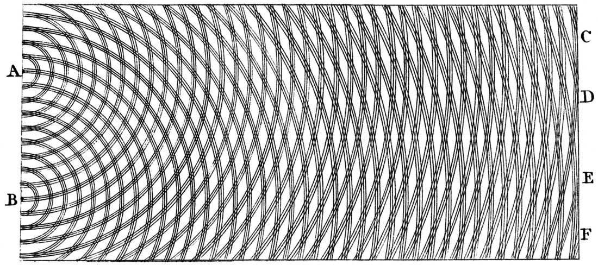
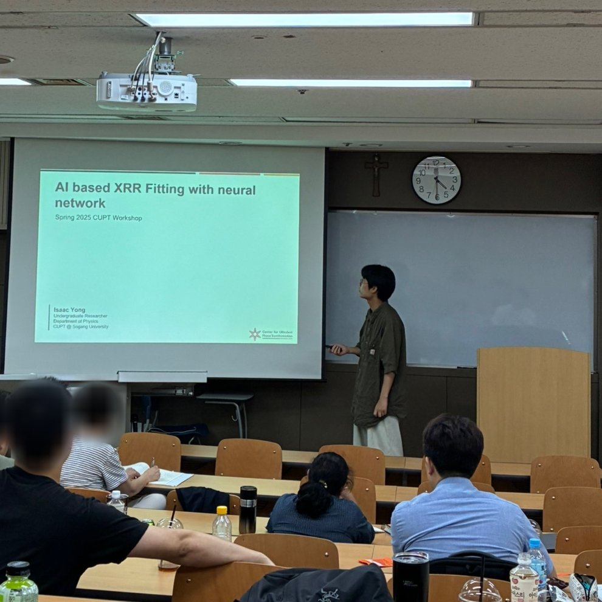
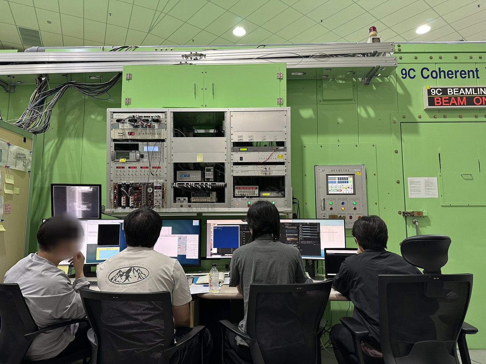
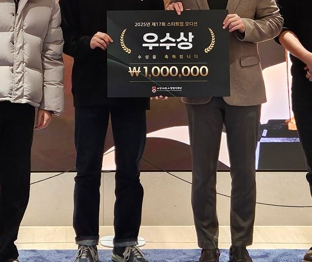
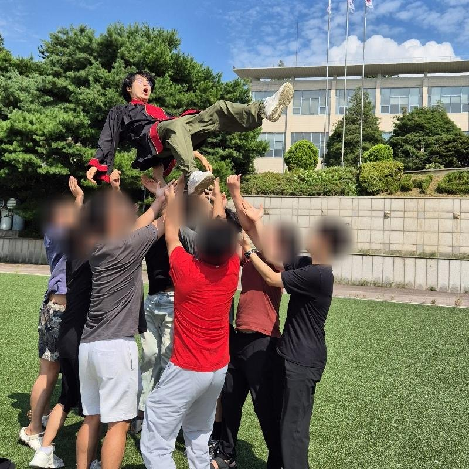

From scattered wavesto structure.
I'm Isaac Yong. I work with X-rays, diffraction and computation, from how waves scatter to what we can learn from them.

MS student in Physics at Sogang University, CUPT Lab. The measurements happen at synchrotron and XFEL beamlines; most of the work happens after them, in code.
Scattering and crystals. What a lattice or a thin film does to an X-ray beam: Bragg and Laue diffraction, reflectivity, and acoustic Bragg satellites forming in dynamical diffraction. TraTT
Signals and phase. A detector records intensity and loses the phase. Fourier analysis, filtering and phase retrieval get it back as far as the physics allows. QoraPhase
Images and inverse problems. From R(q) back to thickness, roughness and SLD; from detector frames to Dark-Field X-ray Microscopy images. ReflectoLearn, QoraDFXM
Tools. Pipelines for time-resolved XFEL data, and calculators that run on the old machines next to the beamline. QoraFlow, calculators

What I built to do it
- QoraFlowPython, HDF5
Turning raw time-resolved XFEL runs into clean, comparable data.
A toolkit for ultrafast pump-probe experiments at X-ray free-electron lasers, refactored from the lab's legacy XFEL_data system by @paulpeterkim.
- ReflectoLearnPython, PyTorch
Reading film thickness, roughness and SLD straight from a reflectivity curve.
A differentiable Abeles transfer-matrix simulator makes training curves on the fly, with Poisson noise, resolution smearing and beam footprint; a 1D CNN predicts the parameters. No dataset files needed.
- QoraPhasePython, JAX
Recovering real-space objects from coherent diffraction patterns.
A composable, JAX-native phase-retrieval framework for CDI, with origin, mask and support conventions written into the API contract.
- TraTTPython
Following how acoustic Bragg satellites form after a laser pulse.
A transient dynamical-diffraction solver, checked against analytic ground truth in its tests.
- X-ray ToolkitES5, offline
Getting beamline numbers on a control-room PC with no internet.
Offline X-ray calculators and a beamtime logbook. No server and no runtime fetches, written in ES5 so it runs on the CentOS 7 default browser, Firefox 60 ESR, in the hutch.
Smaller projects

A film writes its thickness into fringes.
A thin film writes its thickness into the X-ray reflectivity as Kiessig fringes, Δq ≈ 2π/t, and its interface roughness into how fast the curve falls away. Reading the film back out of a measured curve is the inverse problem ReflectoLearn and its predecessor XRefine hand to a neural network. Here XRefine learns, then refines its own guess into a fit.
The detector keeps |F|² and loses the phase.
An aperture on the left, its far-field intensity on the right: the 2D Fourier transform a coherent diffraction pattern measures. The detector keeps the magnitudes and loses the phases, and intensity alone does not pin the object down. Recovering the phases, and with them the image, takes extra constraints such as a support and enough oversampling: that is phase retrieval, which is what QoraPhase does for CDI.
Lately
Notes
On GitHub
Upstream pull requests
Submitted pull requests; listing them does not mean they were merged.

Happy to talk beamtime, inverse problems or open source.
